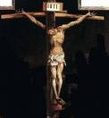

आरंभ में वचन था

एक बड़ा धमाका?
हर दिसंबर, हम वर्ष के सबसे बड़े उत्सव की आशा करना शुरू करते हैं: क्रिसमस! सभी स्टोर रोशनी और टिनसेल से जगमगाते हैं (ऐसा लगता है कि पहले और हर साल पहले), हम अपने घरों के चारों ओर रोशनी करते हैं और एक पेड़ को सजाते हैं, और यहां तक कि शहरों और कस्बों की सड़कें भी कई इमारतों के चारों ओर टिमटिमाती रोशनी से चमकती हैं। और सभी का सबसे बड़ा उत्साह? उपहार! हमें क्या मिलेगा? क्या यह वही होगा जिसकी हम उम्मीद कर रहे थे? हम सिर्फ 25 दिसंबर का इंतजार नहीं कर सकते!

एक बहुत ही शांत प्रवेश
तो, क्या 2000 साल पहले ऐसा ही हुआ था? क्या लोग बेसब्री से इंतज़ार कर रहे थे: क्या उनके घर यीशु के जन्म की प्रत्याशा में सजाए गए थे? क्या उन्होंने इस लंबे समय से प्रतीक्षित जन्म का जश्न मनाने के लिए एक-दूसरे के लिए उपहार खरीदे थे? जब उनका जन्म हुआ था, क्या पूरी दुनिया में यह घोषणा की गई थी कि उद्धारकर्ता अंत में आया था?
काफी नहीं।

जब यीशु का जन्म बेथलहम में हुआ था, जिसे डेविड का शहर भी कहा जाता है (याद है?), केवल कुछ मुट्ठी भर लोग ही इसके बारे में जानते थे। मरियम, यीशु की माँ, और यूसुफ, उसका मंगेतर थे।जिन लोगों के पास उस सराय के अस्तबल का मालिक था जहां मैरी और जोसेफ रह रहे थे, वे शायद जानते थे कि महिला ने जन्म दिया था, लेकिन उनके लिए इसका कोई विशेष महत्व नहीं था।
परन्तु स्वर्ग में बड़ा आनन्द था, हम जानते हैं, क्योंकि लूका 2:8-14 हमें बताता है कि यीशु के जन्म की रात को स्वर्गदूतों का एक बड़ा समूह कुछ चरवाहों को दिखाई दिया। उन्होंने न केवल यह घोषणा की कि यीशु नाम के एक बच्चे का जन्म हुआ है, बल्कि उन्होंने वास्तव में घोषणा की कि वह मसीहा है जिसका यहूदी लोग इतने लंबे समय से इंतजार कर रहे थे!
लेकिन यह तीस साल और होगा जब कोई और यह पता लगाना शुरू करेगा।
चार आदमी, चार कहानियाँ

यीशु की मृत्यु, पुनरुत्थान और स्वर्ग में स्वर्गारोहण के बाद के वर्षों में, चार अलग-अलग व्यक्तियों को यीशु के जीवन के बारे में लिखने के लिए प्रेरित किया गया था। नए नियम की पहली चार पुस्तकों का नाम उन लोगों के नाम पर रखा गया है जिन्होंने इन आत्मकथाओं को लिखा था (इन्हें सामान्यतः सुसमाचार कहा जाता है): मत्ती, मरकुस, लूका और यूहन्ना।
उन्होंने आपस में इस पर चर्चा नहीं की; वे शायद यह भी नहीं जानते होंगे कि कोई और यीशु की कहानी लिख रहा था। मत्ती, लूका और यूहन्ना ने मरकुस के सुसमाचार को लगभग निश्चित रूप से पढ़ लिया था; विद्वानों का मानना है कि यह यीशु की लिखी जाने वाली पहली जीवनी थी। लेकिन चार सुसमाचार एक दूसरे से स्वतंत्र रूप से लिखे गए थे।

जब कोई व्यक्ति किसी घटना के बारे में कहानी सुनाता है, तो वह आमतौर पर उसमें शामिल करने का प्रयास करेगा, जो उनकी राय में, सबसे महत्वपूर्ण भाग हैं। मत्ती, मरकुस, लूका और यूहन्ना के साथ भी ऐसा ही था। कुछ में ऐसी घटनाएं शामिल हैं जो अन्य नहीं करते हैं; कुछ घटनाओं को थोड़े अलग क्रम में बताते हैं।
उदाहरण के लिए, केवल मत्ती और लूका ही यीशु के जन्म की कहानी बताते हैं। शायद, लूका के मन में लोगों के लिए यह जानना ज़रूरी था कि यीशु का जन्म एक कुंवारी लड़की से हुआ था। मरियम की मंगेतर, जोसफ, यीशु के पिता नहीं थे; यीशु परमेश्वर का पुत्र था। (लूका 1:26-38)
मत्ती का सुसमाचार यीशु के वंशवृक्ष से आरम्भ होता है। क्या आपको याद है कि कैसे, बहुत पहले के समय में, परमेश्वर ने अब्राहम से वादा किया था कि संसार को एक राजा के द्वारा आशीष दी जाएगी जो उसके वंशजों से आएगा (उत्पत्ति 12:3)? मैथ्यू हमें यह दिखाने के लिए सावधानी बरतता है कि यीशु राजा डेविड का प्रत्यक्ष वंशज था, जो अब्राहम का प्रत्यक्ष वंशज था। यीशु उस प्राचीन भविष्यवाणी की पूर्ति थे।
मरकुस और यूहन्ना के मामले में, ऐसा लगता है कि जब वे यीशु के बारे में लिख रहे थे, तो हर कोई जानता होगा कि वे किसके बारे में बात कर रहे थे: यहाँ पृथ्वी पर अपने दिनों में, यीशु बहुत, बहुत प्रसिद्ध थे। इसलिए, मरकुस और यूहन्ना ने यीशु के बारे में अपनी कहानियाँ उस समय शुरू की जब उसने अपनी सांसारिक सेवकाई शुरू की, अर्थात्, जब यीशु लगभग तीस वर्ष का था।
एक अप्रत्याशित मसीहा

जब हमें उन भविष्यवक्ताओं के बारे में पता चला जिन्होंने भविष्यवाणी की थी कि इस्राएल अश्शूर और बाबुल पर गिर जाएगा, तो हमने यह भी जाना कि वही भविष्यद्वक्ता भविष्यवाणी कर रहे थे कि राजा दाऊद के वंश से एक राजा, एक मसीहा, एक उद्धारकर्ता निकलेगा। इन भविष्यवाणियों ने यहूदियों को यह आशा दी कि इस्राएल फिर से एक महान राष्ट्र बनेगा, कि एक राजा इस्राएल के सभी शत्रुओं पर विजय प्राप्त करने के लिए आएगा और उन्हें एक ऐसी महाशक्ति बना देगा जो दुनिया पर शासन करेगी।
लेकिन यहूदी सभी भविष्यवाणियों को नहीं पढ़ रहे थे; या, यदि वे थे, तो उन्होंने उनमें से कुछ को बहुत गलत समझा। भविष्यवक्ताओं ने परमेश्वर द्वारा भेजे जाने वाले मसीहा के दो विवरण दिए। एक, वास्तव में, एक शक्तिशाली शासक होना था। यहूदी जो नहीं समझते थे वह यह था कि यह राजा सबसे अचूक जगह से आएगा और वह बड़ी धूमधाम से नहीं आएगा (याद रखें अँधेरी छोटी बेथलहम में शांत रात?) यह नया राजा एक ऐसा व्यक्ति होगा जो पृथ्वी पर दुःख, शोक और पीड़ा को जानेगा, न कि राजा की महिमा और शक्ति को।
एक पराजित, निराश लोगों के रूप में, यहूदी एक मसीहा की तलाश नहीं कर रहे थे जैसे कि विनम्र व्यक्ति यीशु था; वे उससे कहीं अधिक शानदार किसी की तलाश में थे।
और ऐसा हुआ कि जब यीशु आया और उनके बीच रहा, तो उन्होंने मसीह को देखकर उसे नहीं पहचाना

यीशु की शिक्षा
याद रखें कि यीशु एक ऐसे स्थान पर पले-बढ़े जो दूसरे देश के शासन के अधीन था: इस समय तक, यह शक्तिशाली रोमन साम्राज्य था। यीशु एक बहुत ही साधारण समाज में पले-बढ़े; यहूदी लोग बहुत ही धार्मिक रूप से धार्मिक थे, और उसके पड़ोसी किसान या मछुआरे या व्यापारी थे (यूसुफ, उसकी माँ का पति, व्यापार से बढ़ई था)।
शायद इस वजह से, यीशु ने दृष्टान्त कहलाने वाली कहानियों को बताकर आध्यात्मिक सत्य सिखाने की कोशिश की, जिसमें अक्सर ऐसी चीजें शामिल होती हैं जिनसे उनके समाज के लोग परिचित और समझे जाते:

- एक किसान अपने खेत में बीज बो रहा है (मत्ती 13:2-23)
- एक बेटा जो अपने माता-पिता के खिलाफ विद्रोह करता है, लेकिन अपने पापों के लिए बड़े पश्चाताप के साथ उनके पास लौटता है (लूका 15:11-32)
- एक चरवाहा जो अपनी एक भेड़ को खो देता है (मत्ती 18:10-14)

फरीसी
यीशु के दिनों में, याजकों (बाइबल उन्हें फरीसी भी कहते हैं - एक शब्द जिसका अर्थ है "अलग-अलग") यहूदियों के दैनिक जीवन पर शासन करते थे। याजक इस्राएल के बारह गोत्रों में से एक से आए थे जिन्हें परमेश्वर ने विशेष रूप से उस भूमिका के लिए चुना था: लेवीय (लेवी के गोत्र से)। वे यहूदी लोगों को भटकने से बचाना अपना काम समझते थे, जैसा कि वे पहले करते थे। उन्होंने सोचा, लोगों के लिए बाइबल पढ़ना और उसकी व्याख्या करना उनका काम था। (याद रखें कि हमने पहले क्या कहा था कि परमेश्वर सभी के लिए बाइबल का इरादा रखता है?)
यीशु लेवी के गोत्र से नहीं था, इसलिए यीशु याजक नहीं था।

एक रब्बी, या बाइबल की सच्चाइयों और ज्ञान का शिक्षक होने के लिए, एक व्यक्ति को एक विशेष रब्बीनिक स्कूल में प्रशिक्षण की लंबी अवधि से गुजरना पड़ता था।
यीशु रैबिनिकल स्कूल नहीं गया था, इसलिए फरीसियों ने उसे शिक्षक होने के लिए "योग्य" नहीं माना।
इसलिए, लगभग अपनी सेवकाई की शुरुआत से ही, यीशु का धार्मिक शासकों के साथ मतभेद था। फिर भी, यीशु को उपदेश सुनने के लिए लोगों की भीड़ जमा हो गई। उसकी सबसे प्रसिद्ध शिक्षाओं में से एक में, जिसे पर्वत पर उपदेश कहा जाता है (यह मत्ती 5 और लूका 6 दोनों में पाया जा सकता है), वस्तुतः उसके द्वारा दिया गया हर बिंदु फरीसियों के लोगों के विश्वास के विपरीत था।
कुछ मुख्य विचार जो यीशु चाहते थे कि उनके अनुयायी सीखें:
- परमेश्वर लोगों से प्यार करता है और चाहता है कि वे उसे वापस प्यार करें। परमेश्वर के लिए प्रेम दिखाने का एक तरीका न केवल व्यवस्था के अक्षर का पालन करना है, बल्कि व्यवस्था की आत्मा का भी पालन करना है। इसलिए, ईमानदार होने के साथ-साथ, यीशु ने अपने अनुयायियों को दयालु, दयालु और न्यायी होने के लिए कहा।
- यीशु चाहता है कि उसके अनुयायी उसके प्रेम से पहचाने जाएँ: अपने संगी विश्वासियों के लिए प्रेम, यहाँ तक कि अपने शत्रुओं के लिए भी प्रेम। परमेश्वर ने विश्वासियों के पापों को क्षमा करने की प्रतिज्ञा की है; वह चाहता है कि हम एक दूसरे को क्षमा करें।
सबसे महत्वपूर्ण बात जो यीशु चाहता था कि उसके अनुयायी यह जानें कि वह, यीशु, परमेश्वर का पुत्र था, और पाप से मुक्ति उसके द्वारा ही मिलती है। बाइबिल में सबसे प्रसिद्ध छंदों में से एक नई वाचा की घोषणा करता है जिसे ईश्वर मानव जाति के साथ बना रहा था, जॉन 3:16:
क्योंकि परमेश्वर ने जगत से ऐसा प्रेम रखा कि उस ने अपना एकलौता पुत्र दे दिया, ताकि जो कोई उस पर विश्वास करे, वह नाश न हो, परन्तु अनन्त जीवन पाए।
यीशु की यह घोषणा दो कारणों से क्रांतिकारी थी: पहला, यह विचार कि यीशु परमेश्वर का पुत्र था, कई यहूदियों के लिए अस्वीकार्य था। एक मात्र मनुष्य ईश्वर कैसे हो सकता है? दूसरा विचार जिसे यीशु के दिनों के धार्मिक नेता स्वीकार नहीं कर सकते थे, वह यह था कि उद्धार अब केवल यहूदियों के लिए आरक्षित नहीं था। यीशु ने कहा कि जो कोई उस पर विश्वास करता है वह परमेश्वर के राज्य का हो सकता है (यूहन्ना 1:12)।
सदूकी
सदूकी, एक प्रमुख, अक्सर धनी, यहूदियों का समूह, जो यीशु के दिनों में रहते थे, रोमनों के साथ एक प्रकार की राजनीतिक व्यवस्था थी, ताकि वे एक निश्चित मात्रा में राजनीतिक शक्ति का आनंद उठा सकें। सदूकियों ने कभी-कभी अपने साथी यहूदियों से रोमन कर एकत्र करने का कार्य किया, और अक्सर इसके बारे में बेईमान थे, लोगों को वास्तव में बकाया राशि से अधिक भुगतान करने की आवश्यकता थी ताकि वे अपने लिए एक हिस्सा रख सकें। कई यहूदी लोगों द्वारा सदूकियों को देशद्रोही माना जाता था, क्योंकि वे घृणा करने वाले रोमियों के साथ घनिष्ठ संबंध रखते थे।
यहूदियों के बीच अक्सर विद्रोह की बात होती थी; उन्होंने रोमन शासन की कठोरता के तहत पीछा किया। सदूकियों ने यहूदियों और रोमियों के बीच शांति बनाए रखना अपना काम समझा। यहूदियों ने रोमियों को जितनी कम परेशानी दी, सदूकियों ने सोचा, यह सबके लिए उतना ही आसान होगा।

यीशु के साथ विरोध
जैसा कि हमने पहले देखा, यीशु लोगों की भीड़ को उपदेश देता रहा और परमेश्वर और उसके प्रेम के बारे में सभी को खुशखबरी सुनाता रहा। फरीसियों को यह कतई पसंद नहीं आया; वे यहूदियों के बीच एकमात्र धार्मिक अधिकार बनना चाहते थे। यीशु ने लोगों को आध्यात्मिक मामलों के बारे में याजकों की तुलना में अधिक गहराई से सोचना सिखाया, और वे इसके लिए उससे प्यार करते थे।

सदूकियों को भी वह बड़ी भीड़ पसंद नहीं थी जिसे यीशु आकर्षित कर रहा था। लोगों की भीड़ को आसानी से नियंत्रित नहीं किया जा सकता था। यदि यीशु चाहता था कि उसके चारों ओर की भीड़ रोम के विरुद्ध विद्रोह में उसका अनुसरण करे, तो वे इसे रोकने के लिए क्या कर सकते थे?
सदूकियों को पता था कि यहूदियों की एक बड़ी भीड़ भी रोमन सेना की ताकत के सामने नहीं थी। यदि रोमियों को यहूदी विद्रोह को दबा देना होता, तो वे उन्हें पूरी तरह से कुचल देते (और यीशु के सांसारिक जीवन के लगभग 35 वर्ष बाद, ठीक ऐसा ही उन्होंने किया)। उनकी राजनीतिक शक्ति का अब रोमनों के साथ कोई मतलब नहीं रह जाएगा, और सदूकी अपनी शक्ति खोने वाले नहीं थे क्योंकि यीशु जैसा कोई दंगा भड़काने वाला नहीं था!

हालाँकि, यीशु ने जो सबसे बुरा काम किया, वह लोगों को यह घोषणा करना था कि वह वास्तव में परमेश्वर का पुत्र था। यीशु ने उन्हें बताया कि वह वही मसीहा है जिसका वे इतने लंबे समय से इंतजार कर रहे थे। फरीसियों के लिए, यह ईशनिंदा (परमेश्वर के लिए अत्यंत अपमान) था! यहूदी कानून के तहत, यह मौत से दंडनीय अपराध था।
बार-बार, यीशु ने मसीहा होने के अपने दावे का समर्थन करने के लिए संकेत और चमत्कार किए थे: उसने बीमारों को चंगा किया, अंधे लोगों को दिखाया, और लंगड़ों को फिर से चलने के लिए प्रेरित किया। यहाँ तक कि उसने एक आदमी को मरे हुओं में से जिलाया था!
यीशु को फरीसियों (क्योंकि वह लोगों को उनके अधिकार पर संदेह करने के लिए प्रेरित कर रहा था) और सदूकियों (क्योंकि वह उनकी शक्ति के लिए खतरा हो सकता है) दोनों के लिए एक खतरे के रूप में माना जाता था।
फरीसी और सदूकी आम तौर पर एक दूसरे के साथ मित्रवत या सहयोगी नहीं थे, लेकिन अब उनका एक साझा दुश्मन था: यीशु।

एक रात, जब यीशु प्रार्थना कर रहा था, यहूदा इस्करियोती, एक व्यक्ति जो यीशु के सबसे करीबी दोस्तों (उसके बारह शिष्यों) में था, ने फरीसियों और सदूकियों के एक समूह का नेतृत्व किया जहां वह जानता था कि यीशु को प्रार्थना करना पसंद है, गतसमनी का बगीचा। यीशु ने गिरफ्तार होने का विरोध नहीं किया, हालाँकि वह जानता था कि उसने कोई अपराध नहीं किया है।
यीशु के आरोप लगाने वाले उसे गुप्त परीक्षण करने के लिए मंदिर के महायाजक कैफा के पास ले गए। उन्होंने कैफा से कहा कि यीशु अपने मसीहा होने के दावे के कारण ईशनिंदा का दोषी था।

जब वह महायाजक के सामने खड़ा हुआ, तो यीशु ने कहा, "मैं मसीह हूं, और तुम मुझे परमेश्वर के दाहिने हाथ बैठे देखोगे।" (मरकुस 14:62)
हालाँकि यीशु के खिलाफ "सबूत" देने के लिए झूठे गवाहों को इकट्ठा किया गया था, कैफा ने फैसला किया कि केवल यीशु का बयान ही अपराध की स्वीकारोक्ति थी। उसका फैसला था कि यीशु को मौत के घाट उतार दिया जाना चाहिए।
रोमन गवर्नर, पोंटियस पिलातुस की अनुमति के बिना यहूदी मृत्युदंड नहीं दे सकते थे। याजकों ने पीलातुस के सामने यीशु को लाया और उससे कहा कि यीशु ने राजद्रोह किया है: यदि वह मसीहा होने का दावा करता है, तो उन्होंने कहा, यह कहने के समान था कि वह यहूदियों का राजा था। रोमन कानून के तहत, सीज़र को छोड़कर कोई भी खुद को राजा नहीं कह सकता था।
पिलातुस ने वास्तव में यह नहीं सोचा था कि यीशु राजा होने का एक गंभीर दावा कर रहा था, क्योंकि उसने खुद के लिए बचाव की पेशकश भी नहीं की थी क्योंकि उस पर मुकदमा चलाया जा रहा था। लेकिन यहूदी याजक जिद कर रहे थे कि यीशु को मार डाला जाए। यहां तक कि जब पीलातुस ने उन्हें एक दोषी हत्यारे, बरअब्बा को मुक्त करने, या यीशु को मुक्त कराने का विकल्प दिया, तो सभी लोग यीशु को मार डालने के लिए चिल्लाने लगे। (मरकुस 15:6-13)
यीशु मरता है और पुनर्जीवित होता है
क्रूस पर चढ़ाई रोमनों द्वारा इस्तेमाल की जाने वाली मृत्युदंड का एक रूप था। यह मरने का सबसे शर्मनाक तरीका था। यद्यपि यीशु को आमतौर पर कला में एक लंगोटी पहने हुए चित्रित किया गया है, वास्तव में उसके कपड़े उतार दिए गए थे, ताकि वह सभी के देखने के लिए नग्न हो। यह विशेष रूप से शर्मनाक था क्योंकि रोमनों द्वारा सबसे बुरे प्रकार के अपराधियों के लिए क्रूस पर चढ़ाई आरक्षित की गई थी।
एक रात पीटे जाने के बाद, पहले उसके यहूदी दोषियों द्वारा और फिर रोमन रक्षकों द्वारा, यीशु को अपना क्रूस उस स्थान पर ले जाने के लिए बनाया गया था जहाँ उसे सूली पर चढ़ाया जाना था। वह अपनी सारी मारों से इतना कमजोर था कि वह क्रूस के भार के नीचे सहन नहीं कर सका; जिस रास्ते से वे गुजरे, एक दास को उसके लिए यीशु का क्रूस उठाने के लिए बनाया गया था।
जब वे सूली पर चढ़ाए जाने के स्थान पर पहुंचे, तो रोमन रक्षकों ने यीशु के हाथों को सूली पर चढ़ा दिया। फिर उन्होंने उन कपड़ों के लिए जुआ खेला जो उन्होंने उससे लिए थे।
हालाँकि आमतौर पर क्रूस पर मरने में कई दिनों की तीव्र पीड़ा होती थी, यीशु के घावों और खून की कमी से पहले की रात शायद उनकी मृत्यु में तेजी आई। वह उसी दिन मर गया जिस दिन उसे सूली पर चढ़ा दिया गया था।

जबकि गतसमनी की वाटिका में गिरफ्तार किए जाने पर यीशु के अधिकांश मित्र उसे छोड़ गए थे, अरिमथिया के जोसेफ नाम का एक व्यक्ति था जो पीलातुस के पास जाने और यीशु के शरीर को मांगने का साहस रखता था ताकि उसे ठीक से आराम करने के लिए रखा जा सके।
उसने यीशु के शरीर को लिनन में लपेटा और चट्टान से खुदी हुई कब्र में रख दिया। फिर उसने प्रवेश द्वार पर एक बड़ा पत्थर घुमाया और अपने रास्ते चला गया।
यीशु ने अपने शिष्यों को कई बार यह बताने की कोशिश की थी कि उन्हें मानव जाति के पापों के लिए अंतिम बलिदान के रूप में मरना होगा, लेकिन उन्होंने उसे कभी नहीं समझा था। यदि यीशु परमेश्वर का पुत्र था, तो उन्होंने तर्क किया, यदि वह परमेश्वर से वादा किया गया मसीहा था, तो वह कभी कैसे मर सकता था?
यीशु की मृत्यु के तीसरे दिन, कुछ स्त्रियाँ जो उसकी मित्र थीं, उसकी कब्र पर गईं। यह यहूदी प्रथा थी कि मृत व्यक्ति के शरीर का कुछ विशेष मसालों से अभिषेक किया जाता था। जब वे जा रहे थे, तो वे आपस में सोच रहे थे कि कब्र के सामने लुढ़के हुए पत्थर को वे कभी कैसे हिलाएंगे।

जब स्त्रियाँ पहुँचीं, तो वे यह जानकर चकित रह गईं कि पत्थर पहले ही लुढ़का हुआ था और कब्र खाली थी!
एक स्वर्गदूत, जो यीशु की देह के स्थान पर बैठा था, उन से कहा, मत डरो! यीशु मरे हुओं में से जी उठा है, जैसा कि उसने कहा था कि वह होगा! स्वर्गदूत ने स्त्रियों से कहा कि वे अपने मित्रों के पास लौट आएं और उन्हें यह महान समाचार सुनाएं कि यीशु मरे हुओं में से जी उठा था। (मरकुस 16:6-7)
जिस तरह यहूदी हर साल मिस्र में गुलामी से मुक्ति के उपलक्ष्य में फसह मनाते हैं, उसी तरह ईसाई ईस्टर संडे को इतिहास की सबसे शानदार घटना के रूप में मनाते हैं: यीशु मृतकों में से जी उठे थे, मानव जाति पर मृत्यु की शक्ति पर विजय प्राप्त कर रहे थे और सभी समय के लिए हमारे पापों की क्षमा प्रदान कर रहे थे।!
स्वाभाविक रूप से, यीशु के मित्र इस पर विश्वास नहीं कर सके जब उन्होंने सुना कि यीशु अपनी कब्र में नहीं है।
लेकिन यीशु अपने पुनरुत्थान के बाद शेष ग्यारह शिष्यों को कई बार दिखाई दिए। उसने उनसे इस बारे में बात करने में काफी समय बिताया कि कैसे वह इतनी सारी भविष्यवाणियों की पूर्ति कर रहा था, और उनकी आँखें आखिरकार उन सभी सच्चाइयों के लिए खुल गईं जिन्हें यीशु ने सूली पर चढ़ाने से पहले उन्हें सिखाने की कोशिश की थी। (लूका 24:27)

यीशु का स्वर्गारोहण
यीशु अपने पुनरुत्थान के बाद चालीस दिनों तक चेलों के सामने प्रकट होता रहा। एक बार, जब वह उनके साथ भोजन कर रहा था, उसने उनसे कहा कि जब तक उन्हें पवित्र आत्मा का उपहार प्राप्त नहीं हो जाता, जिसका वादा किया गया था, तब तक वे यरूशलेम को न छोड़ें। (यूहन्ना 14:16)
अंतिम अवसर पर जब यीशु उनके सामने प्रकट हुए, तो शिष्यों ने उनसे पूछा कि क्या वह अब इस्राएल को उसके पूर्व गौरव को पुनर्स्थापित करने जा रहे हैं। यीशु ने उत्तर दिया कि केवल पिता परमेश्वर को ही इस प्रकार के प्रश्न का उत्तर जानने की आवश्यकता है। (प्रेरितों 1:7)
और जब वे सब उसके साथ वहां खड़े हुए, तो यीशु उनके पास से उठकर दूर जाने लगा। चेलों ने देखा और तब तक देखा जब तक वे यीशु को और न देख सके। यीशु अपने पिता के साथ रहने के लिए स्वर्ग में चढ़ा था। लेकिन कहानी यहीं खत्म नहीं हुई। वास्तव में, यह अभी शुरुआत थी!